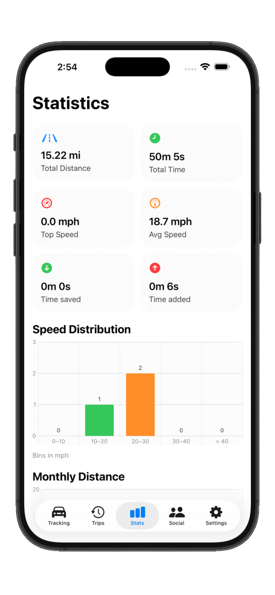
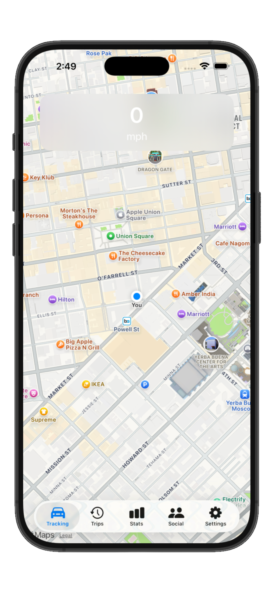
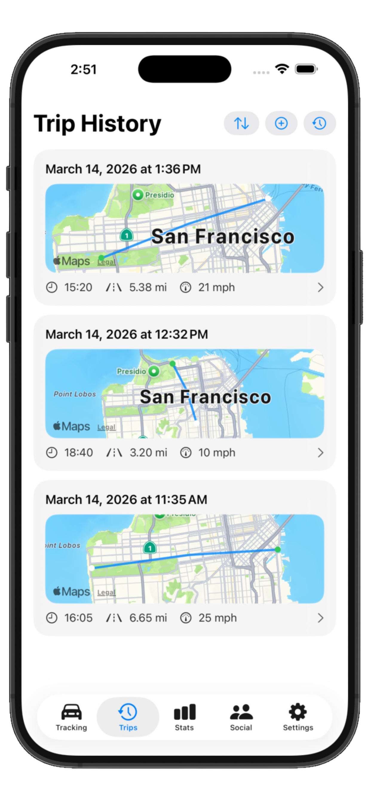

TR1Ptronic
Automatic trip detection
TR1P watches for real driving motion, starts tracking on its own, and still gives you a manual start and stop option when you want control.
Auto detect
Manual override

TR1P keeps a live HUD on your speed, auto-detects trips, and turns your driving history into shareable wins. No clutter—just the signal.
TR1Ptronic
TR1P watches for real driving motion, starts tracking on its own, and still gives you a manual start and stop option when you want control.
Trip detail
Review route previews, duration, distance, speed data, and whether a drive saved or added time compared with the usual route.
Safety
Harsh braking, harsh acceleration, and incident moments get collected into a timeline so the trip is more than just a line on a map.
Insights
Filter your stats by day, week, month, or year, unlock advanced insights, and share clean trip cards when a drive is worth sending.



Inside TR1P
Stats, live tracking, and trip history each get their own lane here so the product feels organized, intentional, and easy to scan.
Compare distance, speed distribution, monthly distance, and drive streaks over time.
Automatic detection, live route capture, speed context, and route timing without manual logging.
Trip cards stay organized with map previews, quick actions, and clean summaries ready to share.
Drive intelligence
TR1P is built to feel automatic first. It detects drives, records route and distance data, and turns each trip into something easy to read instead of another forgotten log.
Trip detail
Users can see how far they drove, how long the trip took, how fast they were going, and whether the route saved or added time, all from one clean detail view.
Control
Settings let users dial in trip detection, while premium unlocks, free rewards, sharable cards, and stats filtering push the app beyond simple route logging.
15 client-facing features
Time saved
TR1P turns that feeling into something visible. Instead of guessing, you can see when a route actually saved time, when it added time, and whether pushing harder made any real difference at all.
See how small speed gains can translate into surprisingly small time changes.
Every drive can show whether the route helped or slowed you down compared with normal patterns.
Privacy-first
Encrypted local storage with optional iCloud sync. You choose what leaves the device—share a single trip or nothing at all.
Detect
Motion kicks in, TR1P starts silently.
Track
Live HUD with map, speed, distance, ETA delta.
Store
Trip saved with mini map, stats, and archive options.
Share (optional)
Send a highlight to friends—no location leaking without consent.